可以将HTML理解为标签固定的XML
< meta> charset="utf-8"< meta>
<title>第一个网页</title>
<body>
HTML真棒
</body>
<!-- 嵌套列表 -->
<ol>
<li>
河北省
<ul>
<li>石家庄</li>
<li>保定</li>
</ul>
</li>
<li>
山西省
<ul>
<li>太原</li>
<li>大同</li>
</ul>
</li>
</ol>
<span style="color:red">中鼎大厦</span>

2)相对路径:只需要写出图片和网页的相对关系.
<!-- 图片和网页平级 -->
<img src = "01.jpg"/>
<!-- 图片在网页下级 -->
<img src = "i/02.jpg"/>
<!-- 图片在网页上级 -->
<img src = "../03.jpg"/>
<!-- 一般这样用 -->
<img src = "../images/04.jpg"/>
<a href="http://www.tmooc.cn">达内</a>
<!-- 从新页打开 -->
<a href="http://doc.tedu.cn" target="_blank">文档</a>
<a name="cang">< /a>
<a href = "#cang">刘苍松</a>
<table border="1" cellspacing = "0" width = "20%">
1:表格线宽, 2:单元格与单元格的间距 3:表格的宽度
跨列
<td colspan = "2">苍老师</td>
align/valign/width/height/rowspan
跨行
<td rowspan = "2">苍老师</td>
<tr>
<td>苍老师</td>
<td>范传奇</td>
</tr>
<tr>
<td>王克晶</td>
<td>程祖红</td>
</tr>
设置表体线的颜色
<tbody style="color:blue"></tbody>

属性:
enctype:
< form action = "http://doc.tedu.cn">< /form>
单标签:
< input type="text" value="rarena" maxlength="10" readonly/>
1.type="text" 文本框
readonly:设置只读
账号:< input type="text" value="rarena" maxlength="10" readonly/>
2.type="password"密码框
readonly:设置只读
密码:< input type="password"/>
3.type = "radio" 单选框
value:将来讲
性别:
< input type="radio" name="sex" checked/>男
< input type="radio" name="sex"/>女
4.type="checkbox" 多选框
value:
兴趣:
< input type="checkbox" checked/>美食
< input type="checkbox" checked/>竞技
< input type="checkbox"/>社交
< input type="checkbox"/>旅游
5.type = "hidden" 隐藏框
value: 默认值
< input type = "hidden" value="love"/>
6.type ="file" 文件框
头像:
< input type ="file"/>
7.type = "submit" 提交按钮
< input type = "submit" value = "注册"/>
8.type = "reset" 重置按钮
< input type = "reset" value = "重置"/>
9.type = "button" 普通按钮
< input type = "button" value = "测试"/>
1.< label>< /label>
label 用来管理表单中的文本,可以将文本与控件绑定到一起,从而增加了控件的可点击范围,提高了易用性
< input type = "checkbox" id="c1"/>
< label for="c1">我已阅读并自愿遵守此协议!< /label>
2.< select>< option>< /option>< /select> 下拉菜单
value:
城市:
<select>
<option>请选择</option>
<option>北京</option>
<option selected>上海</option>
<option>广州</option>
<option>深圳</option>
</select>
3.< textarea>< /textarea> 文本域
readonly:只读
简介:
< textarea cols="30" rows="8" readonly>嘿嘿< /textarea>
<h1 style = "color:red;">CSS</h1>
在<head>标签中:
<style>
/*CSS注释是这样的 */
h2{
color:blue;
}
</style>
首先在<head>标签内引用样式表文件:
<link rel="stylesheet" href="my.css"/>
my.css文件中:
p{
color:yellow;
}
CSS 代码
.female {
color:pink;
}
HTML代码:
<p class="female">绿树浓荫夏日长< /p>
CSS 代码:
#p4{
color:red;
}
HTML代码:
<p id="p4">绿树浓荫夏日长</p>
CSS代码:
.female,#p4 {
font-weight:bold;
}
CSS代码:
#p5 b{
color:red;
font-size:5px
}
HTML代码: <!-- 目标为"北三环"三个字 -->
<p id = "p5">北京市<u>海淀区<b>北三环</b>西路</u>甲18号<b>中鼎大厦</b>B座8层</p>
CSS代码:
#p5>b {
font-size:30px
}
HTML代码: <!-- 目标为"中鼎大厦"四个字 -->
<p id = "p5">北京市<u>海淀区<b>北三环</b>西路</u>甲18号<b>中鼎大厦</b>B座8层</p>
未被访问过的
a:link {
color:green;
}
访问过的
a:visited { /*访问过的*/
color:red
}
\#btn1:active{
background-color:yellow;
}
#t1:focus {
background-color:pink;
}
img:hover{
width:250px;
height:250px;
}
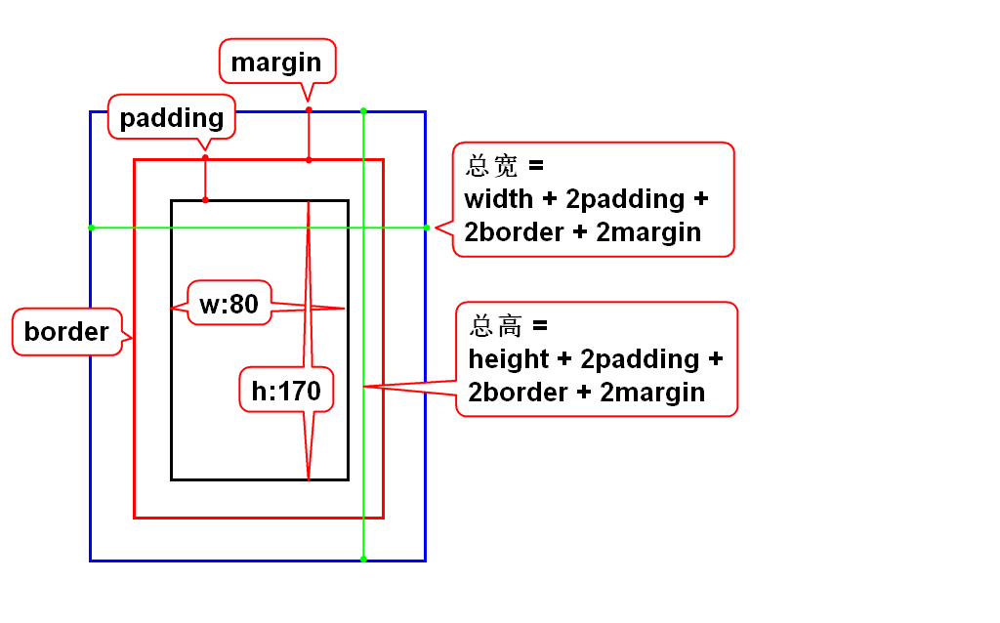
默认情况下,元素的高度会自适应,有多少行字它就有多高,不会溢出.当给元素固定了高度后就可能导致内容的溢出.
四边设置语法:
单边设置语法:
width单位:
color单位:
red:英文单词

/* 单边设置 */
h1{
border-left: 15px solid blue;
}
/* 四个边增加边框 */
p{
border: 1px dashed red;
}
/*默认情况下,元素的高度会自适应,有多少行字它就有多高,不会溢出.当给元素固定了高度后就可能导致内容的溢出. */
p{
width: 200px;
height:50px;
overflow:auto
}
overflow:当内容溢出元素框时如何处理
属性:
background-image:背景图片
body{ background-image:url('../images/01.png'); }
background-repeat:控制背景图片的平铺效果,可取值为
方式一:
#d2{
/*顺序 : 上 右 下 左 */
padding:10px 20px 30px 40px;
margin:40px 30px 20px 10px;
}
方式二:
#d3{
padding-top:20px;
padding-right:40px;
padding-bottom:20px;
padding-left:40px;
margin-top:20px;
margin-right:40px;
margin-bottom:20px;
margin-left:40px;
}
#d1 {
padding:20px;
margin:40px;
}
2个参数,第一个参数为上和下,第二个参数为 左和右
#d5{
padding:20px 40px;
margin:30px 50px;
}
#d3{
padding-left:20px;
margin-bottom:30px;
}
#d5{
margin:20px auto;
}
repeat:在垂直和水平方向重复
repeat-x:仅在水平方向重复
repeat-y:仅在垂直方向重复
no-repeat:仅显示一次
x% y%:第一个值为水平位置,第二个值为垂直位置
x y:第一个值为水平位置,第二个值为垂直位置
left: 左边显示
center:中心显示
right:右边显示
top:顶部显示
bottom:底部显示
scroll:默认情况下背景会随文档滚动
fixed:背景图像固定,并不会随着页面的其余部分滚动,常用于实现水印图像
权重越大优先级越高
增加父亲不会影响逻辑,但是会提高选择器的优先级

采用定位可以将元素摆放到网页的任意的位置
流:元素有序排列而形成的队伍
特殊定位:
浮动定位:可以让块元素水平排列
相对定位:让元素以自身为目标产生微小的偏移
绝对定位:让元素以父辈为目标产生较大的偏移
固定定位:让元素以窗口为目标产生巨大的偏移
后三种定位十分相似
可以让块按照正序左右排列 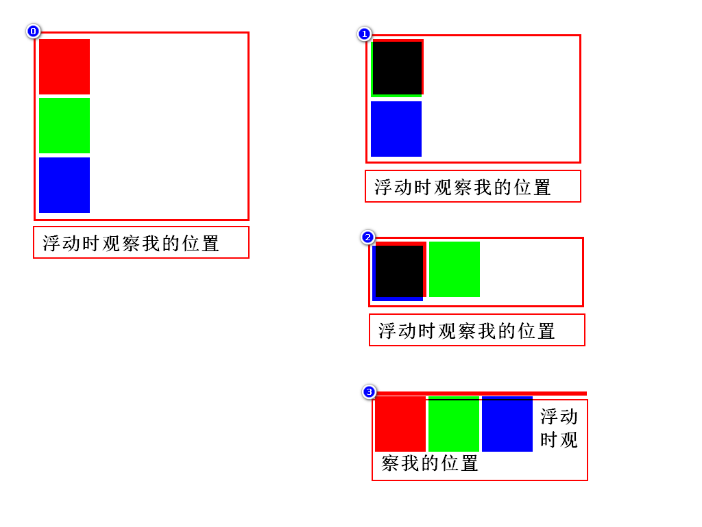
float:none/left/right;属性用于定义元素在哪个方向浮动


元素的位置不释放
想以谁为目标就在谁上面加position
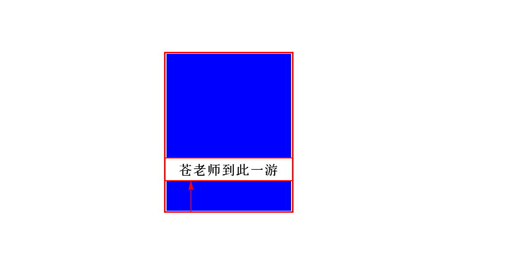
元素会挂在窗口上保持不动
一旦修改了元素的定位方式,则元素可能会发生堆叠
z-index 属性:可以控制元素出现的重叠顺序
值为数值:数值越大表示堆叠顺序更高.
可以设置为负值:表示离用户更远.


特点:
由浏览器内置的JavaScript引擎执行代码,事先不编译,逐行执行,内置大量现成对象
适宜:客户端数据计算,客户端表单合法性验证, 浏览器事件的触发,网页特殊显示效果制作,服务器的异步数据提交
事件:就是用户的操作/动作,就是js触发的时机.如:单击,双击事件.
2.1 事件定义式:在定义事件时直接书写js
< input type="button" value="按钮1" onclick="alert('苍老师');"/>
2.2 嵌入式:在script标签内书写js.该标签可以写在网页的任意位置
< input type="button" value="按钮2" onclick="f2();"/>
< script>
//1.js中的函数都是公有的
//2.js中的函数可以有返回值,但是不需要声明类型
function f2(){
//js中不区分单引号和双引号
alert("范传奇")
}
< /script>
2.3 文件调用式:在单独的js文件中书写js.
- 该标签要么用来引入js,要么用来书写js.
< script src = "my.js">< /script>
JavaScript语言中代表特定含义的词称为保留字,不允许程序再定义为标识符
变量声明:使用关键字var声明变量

数据类型的隐式转换:
数据类型转换函数:
typeof():查询当前类型,返回string/number/boolean/object/function/undefined
isNaN():判断被检测表达式经过转换后是否不是一个数,不是返true,否则返回false
不全等:!==
var c = 6;
var d = "6";
console.log(c==d);//true
console.log(c===d);//false
js中允许使用任何值做条件,当该值是非布尔值时,若它是空值,则相当于false,若它是非空值,则相当于true.
//这样的规则是为了简化条件表达式. var k = "hi"; if(k){ console.log("ok"); }
var h = 9; h && console.log("猥琐"); //短路
案例 一.计算平方 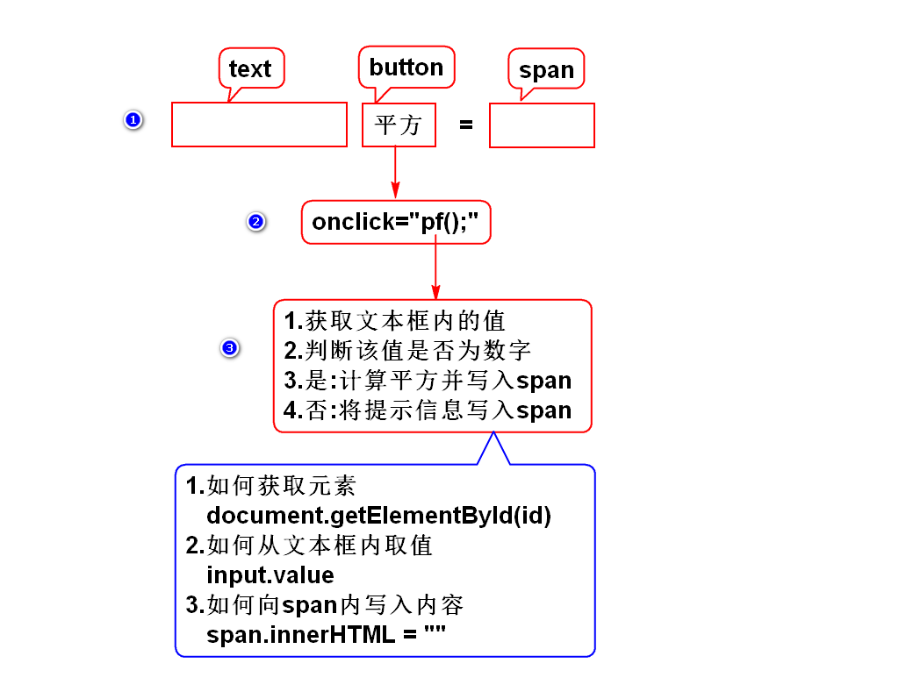
案例 二.猜数字

案例 三.计算阶乘

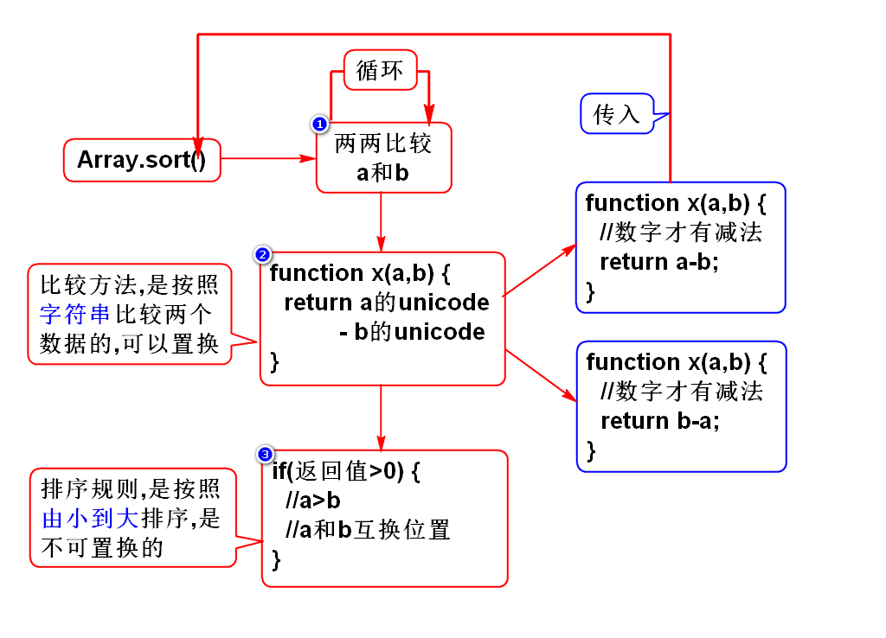

看看W3C中文手册

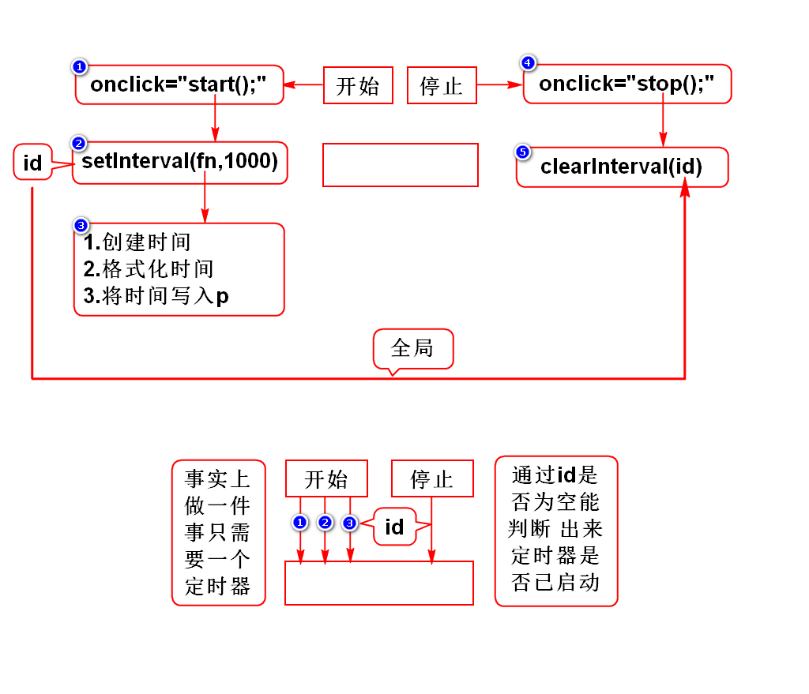
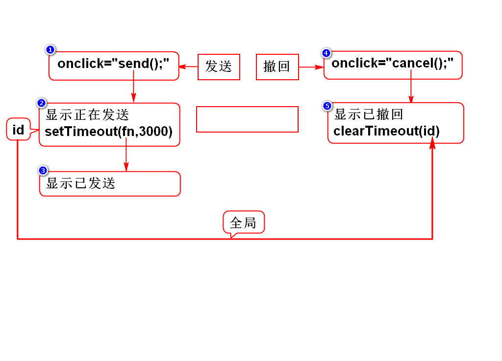

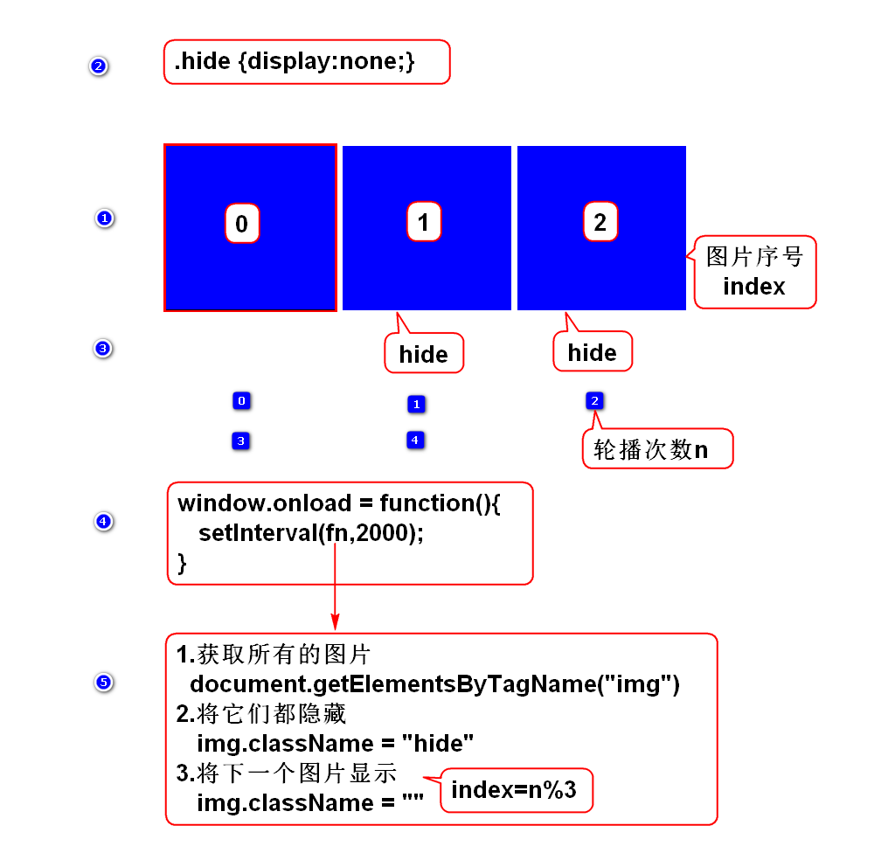

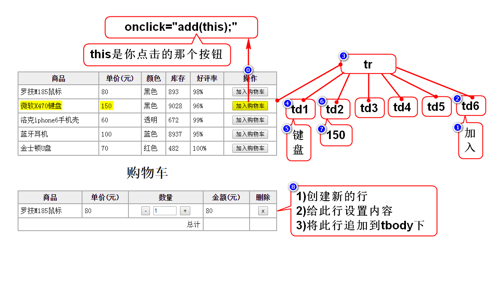
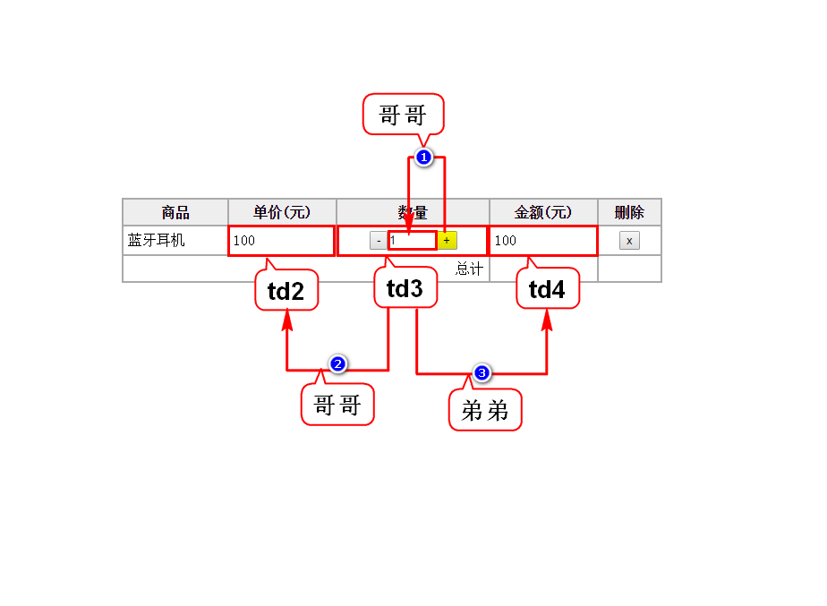
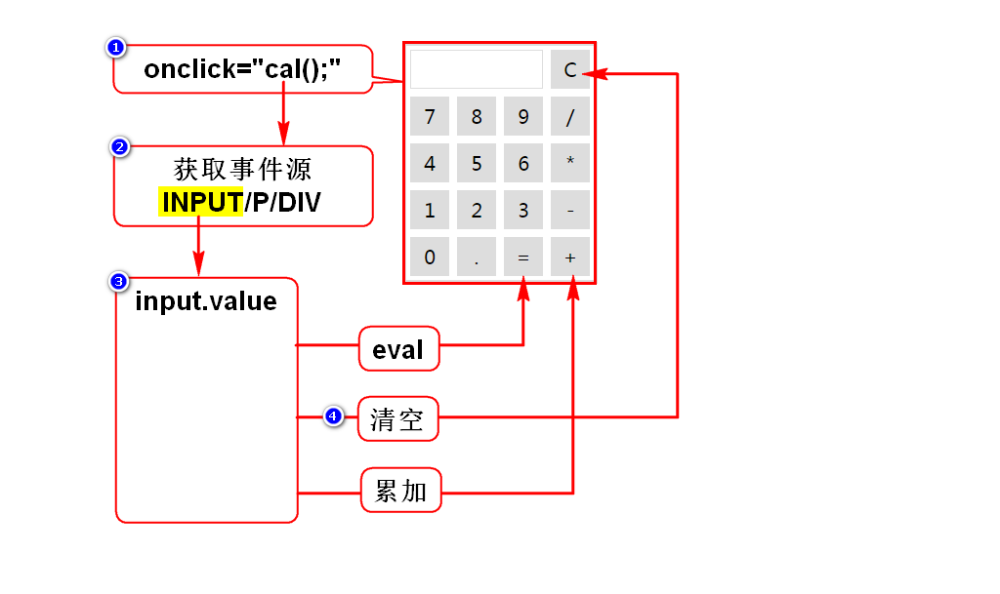